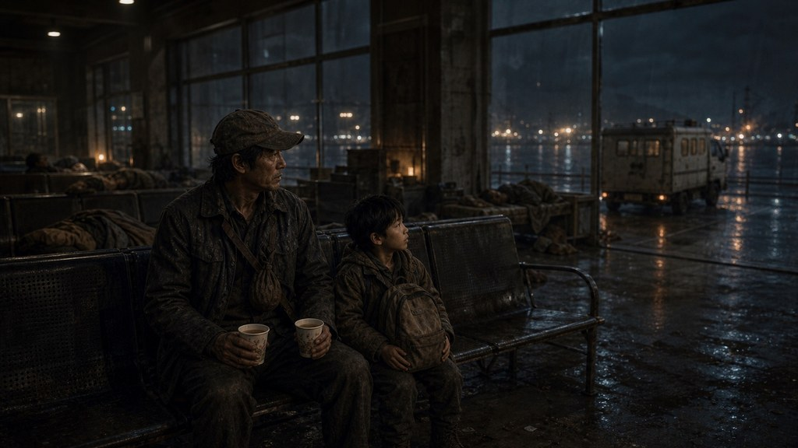

내 기억 · 여덟 살
부산 터미널에서
기다리던 밤
엄마는 다음 차로 꼭 온다고 했다.
막차가 들어올 때마다 우리는 일어섰다.
Caravan · 디자인 초안
작게 남겨 두고, 내가 고른 순간에 펼친다.
정차 화면 배치 예시이미지·대사는 기존 원본 사용
지금 펼쳐도, 조금 뒤에 펼쳐도.
내 기억 · 여덟 살
엄마는 다음 차로 꼭 온다고 했다.
막차가 들어올 때마다 우리는 일어섰다.
다시 펼쳐볼 수 있는 이야기.
내 기억 · 여덟 살 읽음

안내판이 전부 꺼진 뒤에도
우리는 한 시간을 더 앉아 있었다.
여덟 살의 나는 할아버지와
막차가 들어올 때마다 일어섰다.
엄마는 다음 차로 꼭 온다고 했다.
이송표를 다시 수첩 사이에 끼웠다.
지금 확인하러 가는 것도
그때 끝내 듣지 못한 대답이었다.
처음부터 비교하기 · 기억 버튼과 열람 흐름만 눌러볼 수 있는 시안이다.